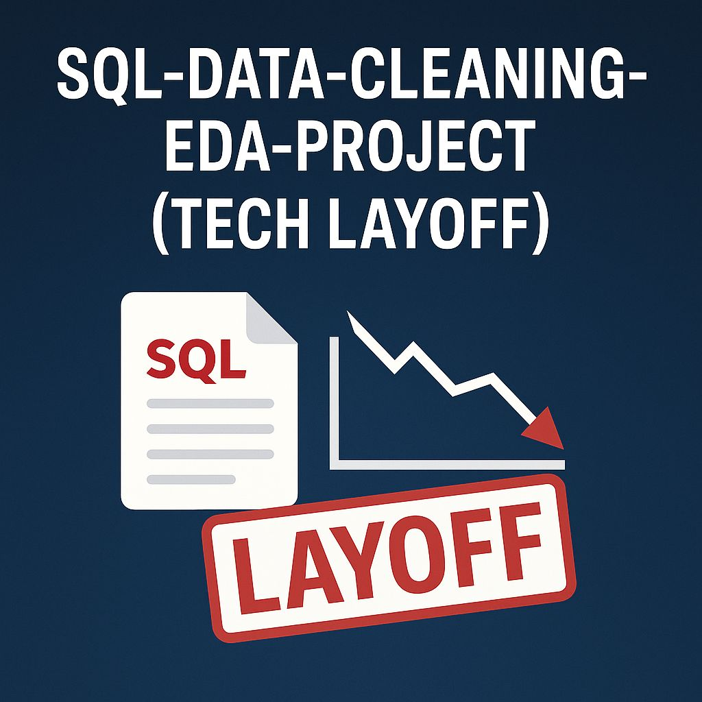

This project explores ride patterns and user behavior for Cyclistic a bike-share company.
The business goal is to analyse how casual riders use the service compared to members,
and how to convert casual users into long-term members.


A real-world data analysis project exploring NHS England’s A&E attendance and emergency admissions data. This project focuses on cleaning messy healthcare datasets, understanding hospital wait time performance, and uncovering insights using Python, Pandas, and Jupyter Notebook.

In this project I performed data cleaning on a real-world dataset involving global tech layoffs. The dataset was sourced from The Analyst Builder GitHub and is licensed under Creative Commons. The goal was to clean and prepare the data for analysis using SQL in MySQL Workbench.